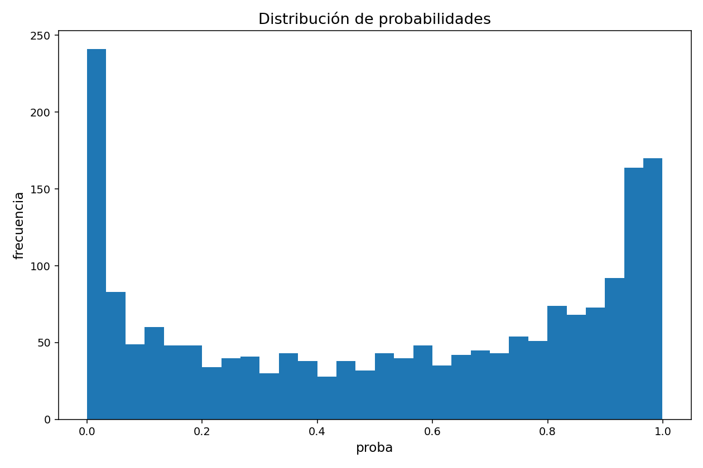
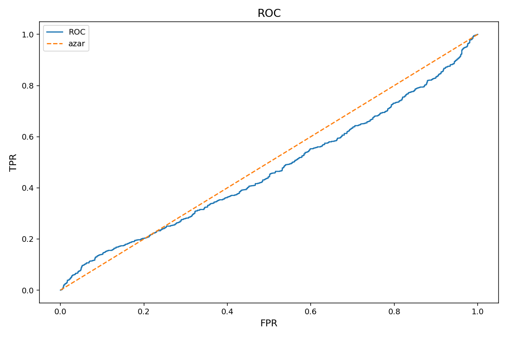
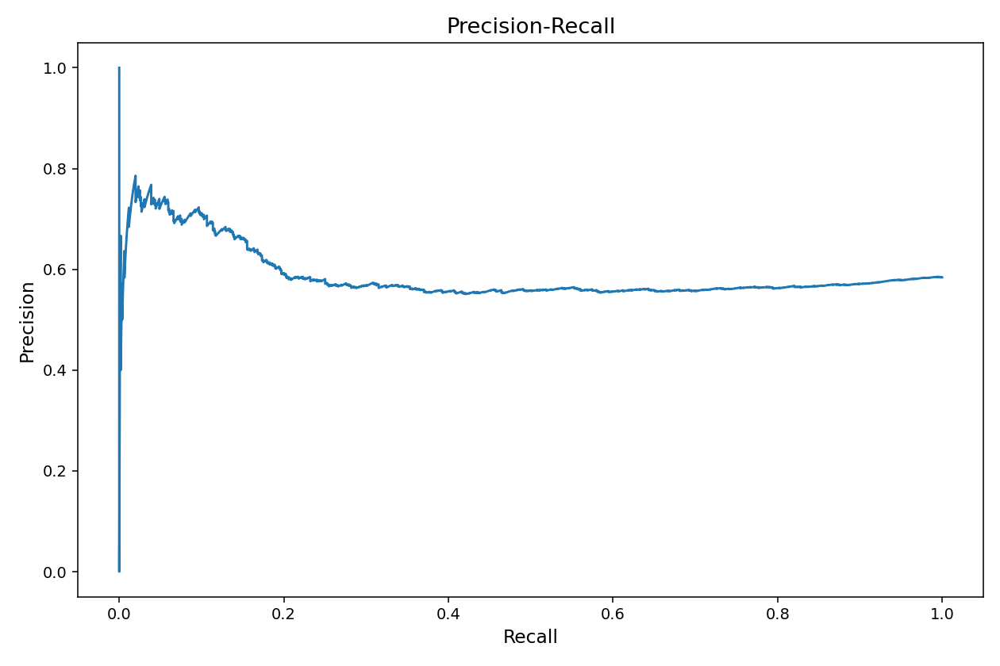
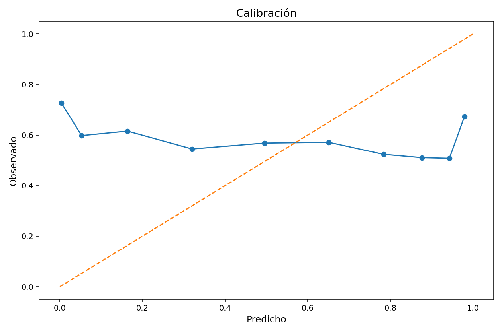
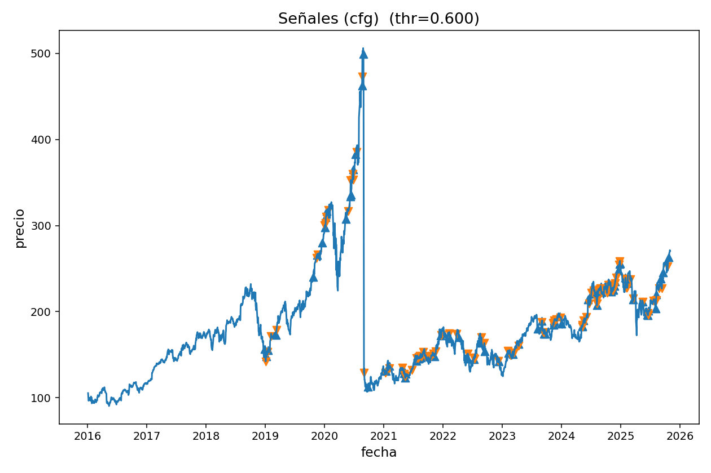
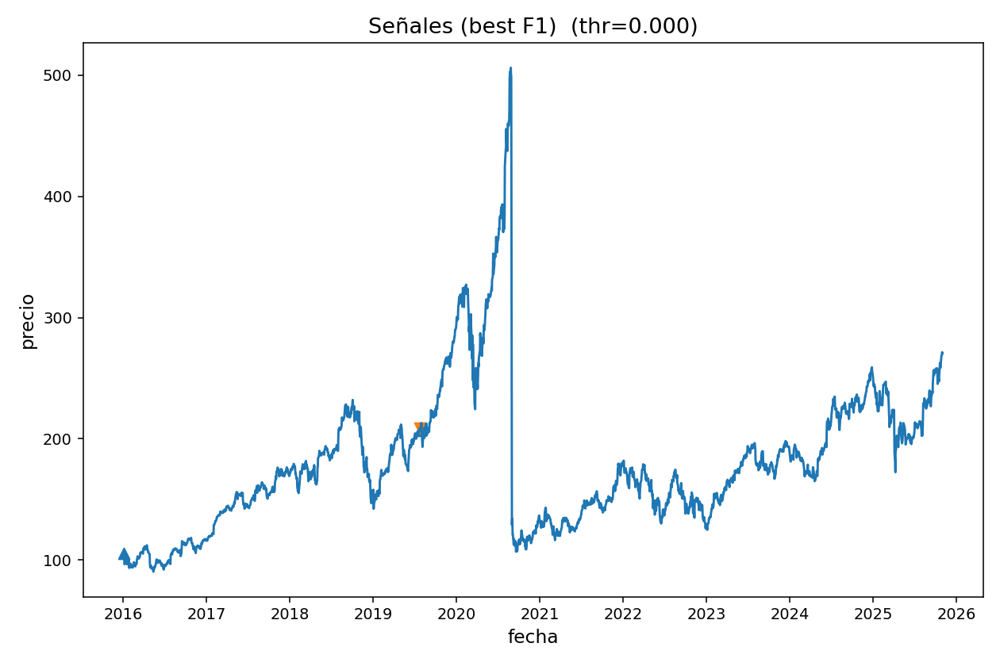

Reporte Técnico
Generado: 2025-11-03 16:19:59
Config (detectada)
Ticker: AAPL
Start: 2016-01-01
Fuente: auto
Prob. threshold (cfg): 0.6000
Label source: probabilities_ml.csv
Métricas globales
ROC-AUC: 0.4671
PR-AUC: 0.5885
Brier: 0.3961
LogLoss: 1.4388
Confusión (thr=cfg)
TP: 507 FP: 404
TN: 384 FN: 600
Precision: 0.5565
Recall: 0.4580
F1: 0.5025
Confusión (thr=bestF1)
TP: 1107 FP: 787
TN: 1 FN: 0
Precision: 0.5845
Recall: 1.0000
F1: 0.7378
Histograma de probabilidades

Curva ROC

Curva PR

Calibración

Precio + señales (thr=cfg)

Precio + señales (thr=bestF1)

Notas
Si quieres métricas completas y matrices de confusión, guarda
y_true
junto con
proba
en
probabilities_ml.csv
.
Las señales BUY/SELL marcan cambios de estado de predicción (0→1 y 1→0) sobre el precio.